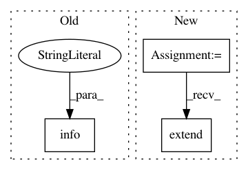

a92913a181b7ae4e1ea0e626f8f8fec6651fde84,perfkitbenchmarker/linux_benchmarks/memcached_memtier_benchmark.py,,Run,#Any#,112
Before Change
"memcached_server_size": FLAGS.memcached_size_mb,
"memcached_server_threads": FLAGS.memcached_num_threads}
logging.info("Start benchmarking memcached using memtier.")
samples = memtier.Run(client, server_ip, memcached_server.MEMCACHED_PORT)
for sample in samples:
sample.metadata.update(metadata)
After Change
client = benchmark_spec.vm_groups["client"][0]
server = benchmark_spec.vm_groups["server"][0]
server_ip = server.internal_ip
samples = []
metadata = {"memcached_version": memcached_server.GetVersion(server),
"memcached_server_size": FLAGS.memcached_size_mb,
"memcached_server_threads": FLAGS.memcached_num_threads}
for pipeline in FLAGS.memtier_pipeline:
for client_thread in FLAGS.memtier_threads:
logging.info(
"Start benchmarking memcached using memtier:\n"
"\tmemtier threads: %s"
"\tmemtier pipeline, %s"
"\tmemtier connection, %s",
client_thread, pipeline, FLAGS.memtier_pipeline)
tmp_samples = memtier.Run(
client, server_ip, memcached_server.MEMCACHED_PORT,
client_thread, pipeline)
for sample in tmp_samples:
sample.metadata.update(metadata)
samples.extend(tmp_samples)
return samples
def Cleanup(unused_benchmark_spec):
In pattern: SUPERPATTERN
Frequency: 3
Non-data size: 3
Instances
Project Name: GoogleCloudPlatform/PerfKitBenchmarker
Commit Name: a92913a181b7ae4e1ea0e626f8f8fec6651fde84
Time: 2020-07-08
Author: yuyanting@google.com
File Name: perfkitbenchmarker/linux_benchmarks/memcached_memtier_benchmark.py
Class Name:
Method Name: Run
Project Name: kubeflow/kubeflow
Commit Name: dfd8b2bd90e621aeac7c2b2ff3d9637d8b46bc12
Time: 2019-11-04
Author: 39319471+richardsliu@users.noreply.github.com
File Name: py/kubeflow/kubeflow/ci/kfctl_e2e_workflow.py
Class Name: Builder
Method Name: build
Project Name: kubeflow/kubeflow
Commit Name: 67aa5e8bd0e8a429b710df4086f2fd1ccafa02c8
Time: 2019-10-12
Author: jeremy+github@lewi.us
File Name: testing/kfctl/kf_is_ready_test.py
Class Name:
Method Name: test_kf_is_ready